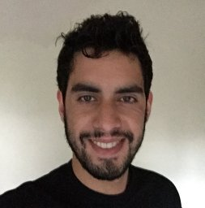
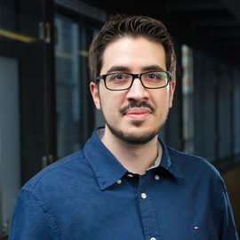
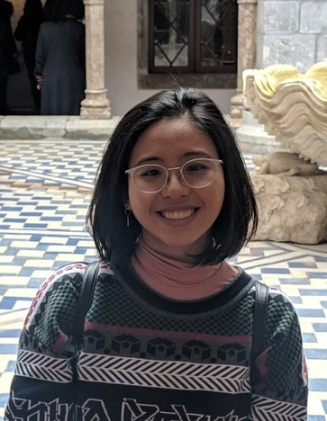
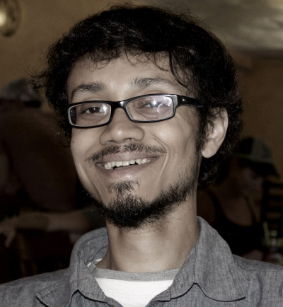
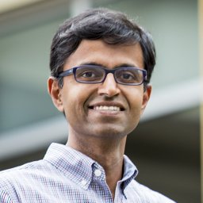

|
RSS Workshop: Topology meets RoboticsProposed event to be held in conjunction with Robotics: Science and Systems 2021 (RSS 2021) |
|---|
Organizers
|  | Christoforos Mavrogiannis Research Associate Paul G. Allen School of Computer Science & Engineering University of Washington Christoforos (Chris) Mavrogiannis is a postdoctoral associate in the Allen School of Computer Science & Engineering at the University of Washington, working with Prof. Srinivasa. His research interests lie at the intersection of motion planning, multiagent systems, and human-robot interaction. At PRL, he is involved in MuSHR, the lab's affordable robotic racecar for research and education, and in the Honda Curious Minded Machine Project for the development of robots that interact curiously with their human partners. Chris has previously been the instructor for CSE 478: Autonomous Robotics at the University of Washington. He holds MS and PhD degrees from Cornell University, and a Diploma from the National Technical University of Athens. |
|
|---|---|---|
|  | Vasilis Vasilopoulos Postdoc University of Pennsylvania TBD |
|
|  | Claire Liang PhD student Cornell University TBD |
|
| Florian Pokorny Associate Professor Machine Learning (Robotics, Perception and Learning) KTH TBD |
||
|  | Subhrajit Bhattacharya Assistant Professor Mechanical Engineering and Mechanics Lehigh University TBD |
|
|  | Siddhartha S. Srinivasa Boeing Endowed Professor Paul G. Allen School of Computer Science & Engineering University of Washington Siddhartha S. Srinivasa is the Boeing Endowed Professor at the School of Computer Science and Engineering, University of Washington. He earned his PhD in robotics from Carnegie Mellon University. He works on robotic manipulation, with the goal of enabling robots to perform complex manipulation tasks under uncertainty and clutter, with and around people. To this end, he founded the Personal Robotics Lab in 2005. He is also passionate about building end-to-end systems (HERB, ADA, HRP3, CHIMP, Andy, among others) that integrate perception, planning, and control in the real world. Understanding the interplay between system components has helped produce state-of-the-art algorithms for robotic manipulation, motion planning, object recognition, and pose estimation (MOPED), dense 3-D modeling (CHISEL, now used by Google Project Tango), and mathematical models for human–robot collaboration. |
|